앞에서는 조건에 따라 실행할 코드를 선택했습니다. 이번에는 같은 작업을 여러 번 실행하는 반복문을 배웁니다.
for로 정해진 횟수만큼 반복합니다.while과do ~ while로 조건에 따라 반복합니다.- 반복하면서 합계를 구하고,
break와continue로 흐름을 조절합니다.
1. for: 정해진 횟수만큼 반복하기
for는 시작값, 반복 조건, 값의 변화를 한곳에 작성합니다. 먼저 1부터 5까지 출력해 봅니다.
파일 이름은 CountFor.java로 저장합니다.
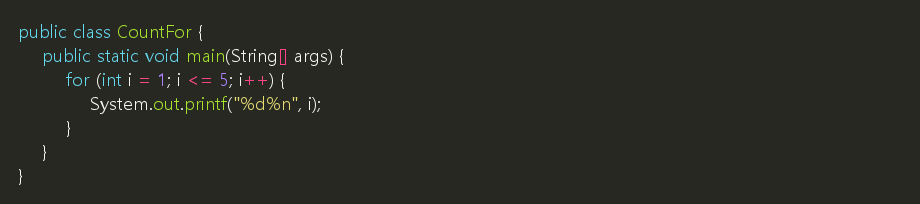
예상 실행 결과:
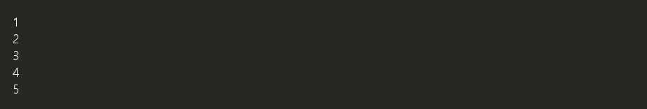
1.1 코드 살펴보기
| 부분 | 역할 |
|---|---|
int i = 1 |
반복 시작 전에 한 번 실행합니다. |
i <= 5 |
매번 반복하기 전에 검사합니다. 참이면 반복합니다. |
i++ |
중괄호 안의 코드 실행 후 i를 1 증가시킵니다. |
{ ... } |
반복해서 실행할 코드입니다. |
i++는 이 예제에서 i = i + 1과 같은 역할을 합니다. i--는 값을 1 줄입니다.
실행 순서는 다음과 같습니다.
i를1로 초기화합니다.i <= 5를 검사합니다.- 참이면
i를 출력합니다. i++로 값을 늘리고 2번으로 돌아갑니다.- 조건이 거짓이면 반복을 끝냅니다.
📌 i < 5로 바꾸면 1~4까지만 출력합니다. 시작값과 조건에 따라 반복 횟수가 달라집니다.
💡 참고: for 안에서 선언한 i는 해당 반복문 안에서만 사용할 수 있습니다. 이렇게 변수를 사용할 수 있는 범위를 변수의 유효 범위라고 합니다.
2. 반복하면서 합계 구하기
누적은 기존 값에 새로운 값을 계속 더하는 것입니다. 합계를 저장할 변수는 반복문 밖에서 0으로 시작합니다.
파일 이름은 SumFor.java로 저장합니다.
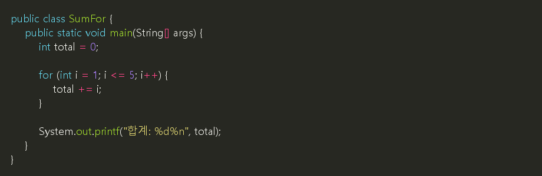
total += i는 여기서 total = total + i를 짧게 쓴 것입니다.
현재 i |
계산 | 계산 후 total |
|---|---|---|
| 1 | 0 + 1 |
1 |
| 2 | 1 + 2 |
3 |
| 3 | 3 + 3 |
6 |
| 4 | 6 + 4 |
10 |
| 5 | 10 + 5 |
15 |
예상 실행 결과:
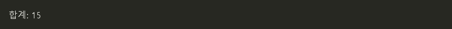
⚠️ 주의: total을 반복문 안에서 매번 0으로 초기화하면 이전 합계를 이어 갈 수 없습니다. 최종 결과를 한 번만 출력하려면 출력문도 반복문 밖에 둡니다.
3. while: 조건이 참인 동안 반복하기
while은 반복을 시작하기 전에 조건을 검사합니다. 반복할 횟수보다 종료 조건이 중요한 경우에 사용할 수 있습니다.
파일 이름은 CountWhile.java로 저장합니다.
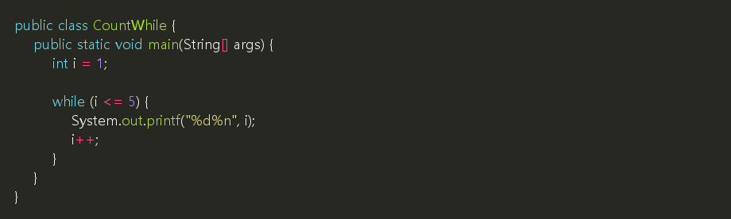
예상 실행 결과는 앞의 CountFor와 같이 1부터 5까지 한 줄씩 출력됩니다.
⚠️ 주의: 이 예제에서 i++를 빼면 i가 계속 1이므로 반복이 끝나지 않습니다. 종료되지 않고 계속 실행되는 반복을 무한 반복이라고 합니다.
4. do ~ while: 한 번 실행한 뒤 검사하기
do ~ while은 중괄호 안의 코드를 먼저 실행하고 조건을 검사합니다. 따라서 최소 한 번은 실행합니다.
다음 예제는 올바른 메뉴 번호를 입력할 때까지 다시 입력받습니다. 파일 이름은 MenuRetry.java로 저장합니다.
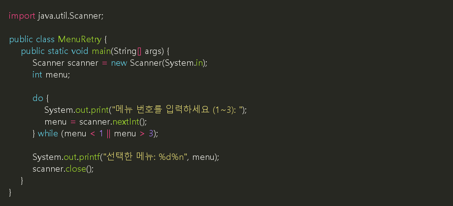
예상 실행 화면:
int menu;는 변수를 만들고 값은 나중에 저장하는 선언입니다. do 안에서 먼저 입력받기 때문에 조건을 검사할 때는 값이 저장되어 있습니다.
📌 do ~ while의 마지막 while (조건); 뒤에는 세미콜론이 필요합니다. 일반 while (조건) { ... }과 구분합니다.
5. break: 반복 끝내기
앞 장에서는 break로 switch를 끝냈습니다. 반복문 안에서는 가장 가까운 반복문을 끝냅니다.
다음 예제는 정수를 계속 입력받아 더하고, 0이 입력되면 끝냅니다. 파일 이름은 SumUntilZero.java로 저장합니다.
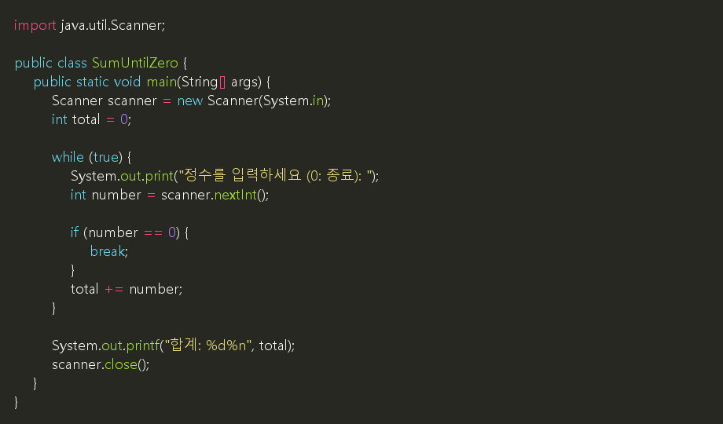
예상 실행 화면:
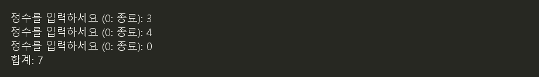
while (true)의 조건은 항상 참입니다. 이 예제에서는 break가 종료 역할을 하므로 0을 입력해야 정상적으로 반복을 마칩니다. 입력값과 합계는 int 범위라고 가정합니다.
6. continue: 이번 반복의 나머지 건너뛰기
continue는 반복 전체를 끝내지 않습니다. 이번 반복에서 남은 코드를 건너뛰고 다음 반복으로 진행합니다.
파일 이름은 EvenNumbers.java로 저장합니다.
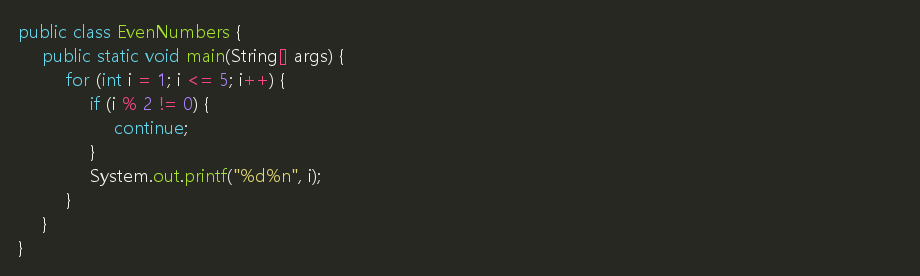
예상 실행 결과:
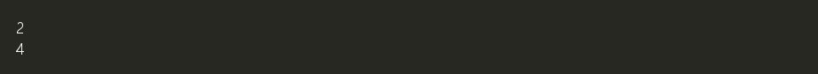
2로 나눈 나머지가 0이 아니면 홀수입니다. 홀수일 때는 출력문을 건너뛰므로 짝수만 출력됩니다. for에서 continue를 만나도 i++를 실행한 뒤 조건을 다시 검사합니다.
⚠️ 주의: while에서 값 증가 코드를 continue 뒤에 두면 그 코드가 건너뛰어져 무한 반복이 생길 수 있습니다.
7. 반복문 비교
| 구분 | 조건 검사 시점 | 사용 예 |
|---|---|---|
for |
실행 전 | 1부터 10까지 출력 |
while |
실행 전 | 종료값이 입력될 때까지 처리 |
do ~ while |
실행 후 | 메뉴를 최소 한 번 입력받고 재입력 |
for와 while은 처음부터 조건이 거짓이면 한 번도 실행하지 않습니다. do ~ while은 처음 한 번 실행한 뒤 계속할지 결정합니다.
8. 연습: 입력한 단의 구구단 출력
- 파일 이름은
MultiplicationTable.java로 저장합니다. Scanner로 2~9 사이의 정수 하나를 입력받습니다.- 범위를 벗어나면
2~9 사이의 정수를 입력하세요.를 출력하고 프로그램을 마칩니다. - 정상 범위라면
for로 1부터 9까지 곱한 결과를 출력합니다. - 결과 형식은
System.out.printf("%d x %d = %d%n", dan, i, dan * i);를 사용합니다.
예상 실행 화면:
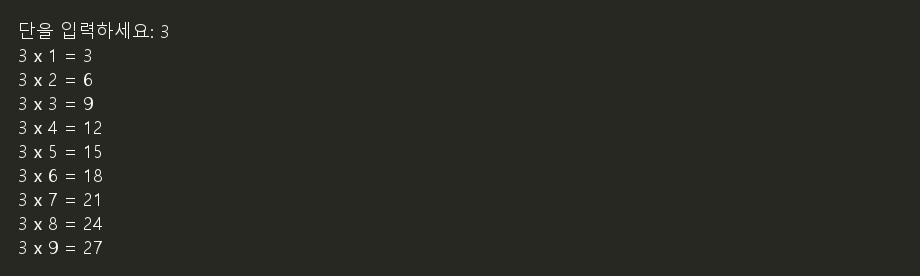
✅ 확인할 것:
2,9를 입력하면 각각 계산 결과가 9줄 출력됩니다.1,10을 입력하면 범위 안내만 출력됩니다.- 반복 변수는 1에서 시작해 9까지 변합니다.
scanner.close()는 입력 처리를 마친 뒤 호출합니다.
💡 참고: 이 장의 입력 예제는 정수가 입력된다고 가정합니다. 문자 입력이나 입력 종료에 대한 예외 처리는 이후에 다룹니다.
- teaching/materials/java/7-1_loops.md최종 수정일: 2026-10-06 18:23